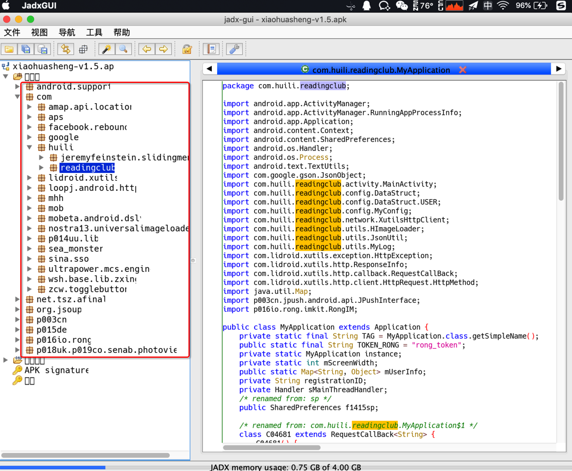
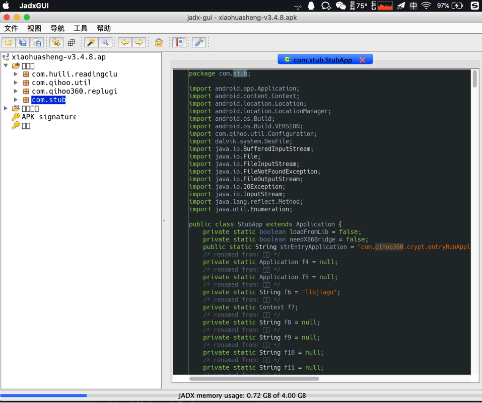
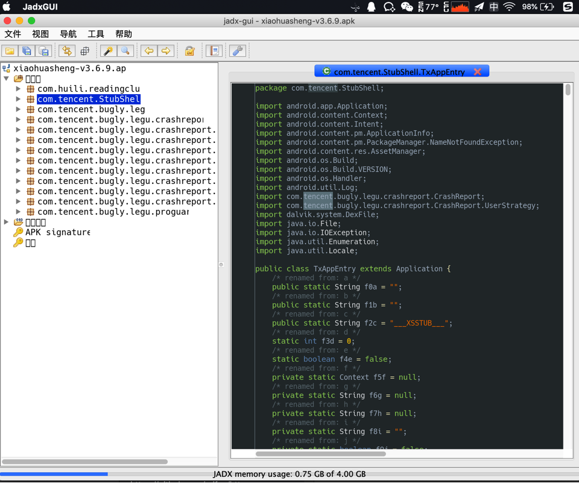

jadx使用心得
经验心得
从jadx-gui打开的结构看出是否加固和是哪家的加固
对于某个安卓的apk，用jadx-gui打开不同版本的apk的效果是：
- v1.5
- 
- v3.4.8
- 
- v3.6.9
- 
-》可以看出apk是否被加固以及用了何种加固方案：
v1.5：没有被加固v3.4.8：加固方案 qihoo奇虎360v3.6.9：加固方案 腾讯乐固legu
常见错误
jadx不能从jar导出java，否则会报错
举例：
../../../../../reverse_engineering/jadx/jadx-1.0.0/bin/jadx ../dex_to_jar/com.ishowedu.child.peiyin9201516-dex2jar.jar -d .
INFO - loading ...
INFO - converting to dex: com.ishowedu.child.peiyin9201516-dex2jar.jar ...
ERROR - jadx error: Error load file: ../dex_to_jar/com.ishowedu.child.peiyin9201516-dex2jar.jar
jadx.core.utils.exceptions.JadxRuntimeException: Error load file: ../dex_to_jar/com.ishowedu.child.peiyin9201516-dex2jar.jar
at jadx.api.JadxDecompiler.loadFiles(JadxDecompiler.java:138)
at jadx.api.JadxDecompiler.load(JadxDecompiler.java:102)
at jadx.cli.JadxCLI.processAndSave(JadxCLI.java:32)
at jadx.cli.JadxCLI.main(JadxCLI.java:18)
Caused by: jadx.core.utils.exceptions.DecodeException: java class to dex conversion error:
dx exception: Translation has been interrupted
at jadx.core.utils.files.InputFile.loadFromJar(InputFile.java:191)
at jadx.core.utils.files.InputFile.searchDexFiles(InputFile.java:82)
at jadx.core.utils.files.InputFile.addFilesFrom(InputFile.java:40)
at jadx.api.JadxDecompiler.loadFiles(JadxDecompiler.java:136)
... 3 common frames omitted
Caused by: jadx.core.utils.exceptions.JadxException: dx exception: Translation has been interrupted
at jadx.core.utils.files.JavaToDex.convert(JavaToDex.java:63)
at jadx.core.utils.files.InputFile.loadFromJar(InputFile.java:182)
... 6 common frames omitted
Caused by: java.lang.RuntimeException: Translation has been interrupted
at com.android.dx.command.dexer.Main.processAllFiles(Main.java:614)
at com.android.dx.command.dexer.Main.runMultiDex(Main.java:365)
at com.android.dx.command.dexer.Main.runDx(Main.java:286)
at jadx.core.utils.files.JavaToDex.convert(JavaToDex.java:49)
... 7 common frames omitted
Caused by: java.lang.InterruptedException: Too many errors
at com.android.dx.command.dexer.Main.processAllFiles(Main.java:606)
... 10 common frames omitted
jadx转换出错：java.lang.OutOfMemoryError
如果用jadx转换代码期间出错：
java.lang.OutOfMemoryError: GC overhead limit exceeded
at jadx.core.dex.visitors.blocksmaker.BlockProcessor.computeDominators(BlockProcessor.java:189)
at jadx.core.dex.visitors.blocksmaker.BlockProcessor.processBlocksTree(BlockProcessor.java:52)
at jadx.core.dex.visitors.blocksmaker.BlockProcessor.visit(BlockProcessor.java:42)
at jadx.core.dex.visitors.DepthTraversal.visit(DepthTraversal.java:27)
at jadx.core.dex.visitors.DepthTraversal.lambda$visit$1(DepthTraversal.java:14)
at jadx.core.dex.visitors.DepthTraversal$$Lambda$19/469590976.accept(Unknown Source)
at java.util.ArrayList.forEach(ArrayList.java:1249)
at jadx.core.dex.visitors.DepthTraversal.visit(DepthTraversal.java:14)
at jadx.core.ProcessClass.process(ProcessClass.java:32)
at jadx.api.JadxDecompiler.processClass(JadxDecompiler.java:292)
at jadx.api.JavaClass.decompile(JavaClass.java:62)
at jadx.api.JadxDecompiler.lambda$appendSourcesSave$0(JadxDecompiler.java:200)
at jadx.api.JadxDecompiler$$Lambda$13/1425454633.run(Unknown Source)
at java.util.concurrent.ThreadPoolExecutor.runWorker(ThreadPoolExecutor.java:1142)
at java.util.concurrent.ThreadPoolExecutor$Worker.run(ThreadPoolExecutor.java:617)
at java.lang.Thread.run(Thread.java:745)
...
且同时伴有：
- CPU占用率很高
- 内存消耗也很大
- 比如此处JadxCLI占用了4G的内存
- 比如此处JadxCLI占用了4G的内存

就是典型的：OOM=Out Of Memory的问题了。
解决办法，有两种：
- 增加JVM最大内存
- 逻辑：修改
jadx脚本，增大-Xmx的值 - 步骤：
- 编辑
jadx-0.9.0/bin/jadx，找到DEFAULT_JVM_OPTS的配置，修改其中-Xmx的值 - 比如把此处的
DEFAULT_JVM_OPTS='"-Xms128M" "-Xmx4g"' - 改为：
DEFAULT_JVM_OPTS='"-Xms128M" "-Xmx6g"' - 即表示，把JVM最大内存，从之前的
4G，增大到6G - 这样就运行
jadx使用更多的内存，从而降低或消除OOM的问题了
- 编辑
- 逻辑：修改
- 减少线程数
- 逻辑：通过
-j N，N=1/2之类，减少进程数，从而降低内存占用，减少OOM的概率 - 步骤：
- 在命令行运行jadx时，传递
-j参数，指定线程数，比如jadx -d output_folder -j 1 your_apk.apk
- 在命令行运行jadx时，传递
- 缺点
- 处理速度会有所降低
- 因为默认
4线程处理，反编译等速度会比较快 - 线程数减少后，反编译等速度可能会有所影响
- 因为默认
- 处理速度会有所降低
- 逻辑：通过
说明：
- 一般反编译小的不复杂的
apk或dex，不会遇到OOM问题 - 反编译比较大型的，比较复杂的
apk或dex，才可能会遇到OOM- 比如之前用jadx反编译马蜂窝时遇到了
OOM
- 比如之前用jadx反编译马蜂窝时遇到了